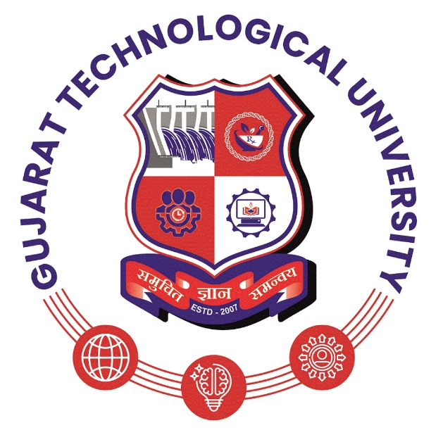

GUJARAT TECHNOLOGICAL UNIVERSITYGujarat Technological University (GTU) is a state university located in Ahmedabad, Gujarat, India.It was established in 2007 by the Government of Gujarat to oversee and improve technical education across the state. GTU affiliates many engineering, pharmacy, management, and computer application colleges, providing quality education and industry-oriented programs. The university focuses on innovation, research, and practical learning to prepare students for professional careers. GTU also encourages entrepreneurship and skill development among students through various academic and training initiatives.